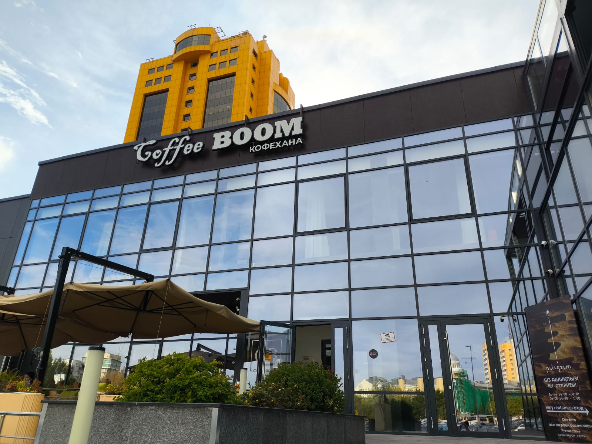

Welcome to Coffee Boom
Coffee Boom is an established specialty coffee chain founded in Kazakhstan, recognized for its vibrant urban culture, rich espresso blends, and European-inspired culinary menu. Our urban coffeehouses serve as comfortable meeting grounds where students, working professionals, and families gather for freshly extracted Arabica roasts and hot breakfast dishes served throughout the day.
Every beverage is prepared using meticulously calibrated espresso machines, balancing temperature and extraction pressure to highlight chocolate and nutty undertones. Complementing our drink selection, our pastry kitchen produces delicate French croissants, cheesecakes, and wholesome savory plates prepared fresh each morning.

Guest Impressions
“Coffee Boom has become our staple morning ritual before lectures. The Spanish Latte has a rich velvety texture, and the atmosphere lets you study in peace for hours.”
Amina Serikova, regular patron, September 2026.
According to coffee enthusiast Arman Barista Mind
, true community spaces rely on consistent bean quality paired with warm, attentive hospitality.
Location & Working Hours
We are open daily to welcome guests from to .
Interactive location map: Coffee Boom Samal 12 on 2GIS.
For urgent inquiries or large reservations: reach us via phone at +7 (7172) 55-50-00 or write directly to samal@coffeeboom.kz.